Groups 7, 9 and 10 · Aalborg University Copenhagen · 23 November 2026
Agenda
01
App overview
02
Live demo with Karsten
03
This sprint
04
Usability test and up next
05
Discussion
Sprint 5 · Goal and changes
Sprint 5 goal
Finish the remaining MVP functionality and integrate it end to end, so we are ready to run a usability test.
Changes we chose to make
01
016 and 017 are replaced by 029 Station chat, based on your feedback at the last review.
02
013 is merged into the revised station status flow in 015.
03
030 Admin dashboard is a new PBI that we created.
What changed · Operator
The operator screen
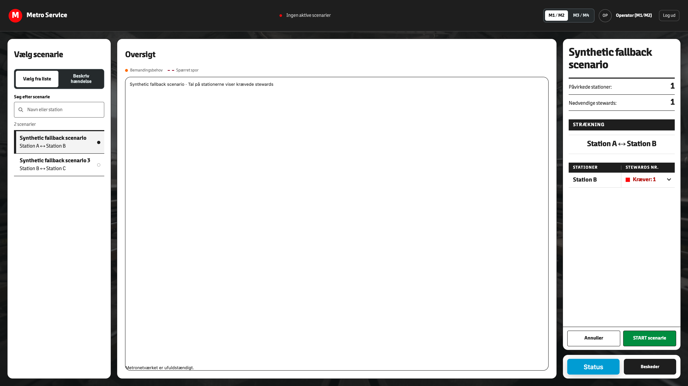
Pick a scenario
Map
Action card
Line-group switch
Picking a scenario
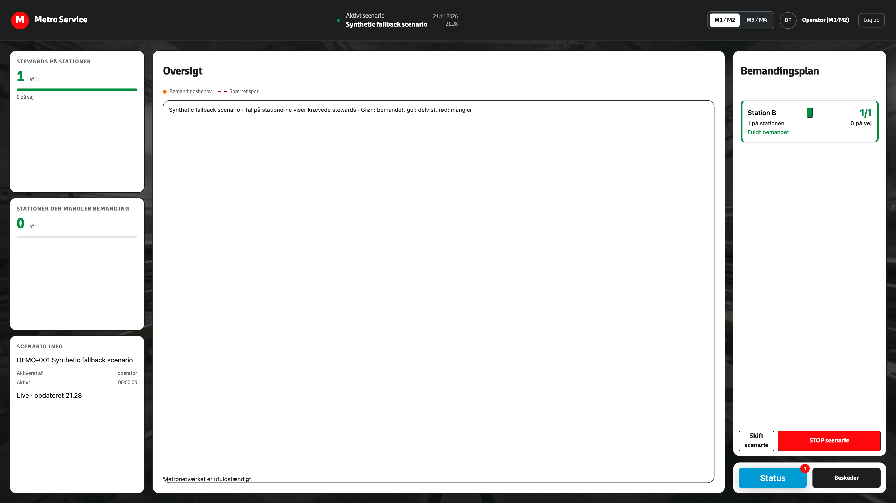
STOP
Scenario active
What changed · Steward
The steward app
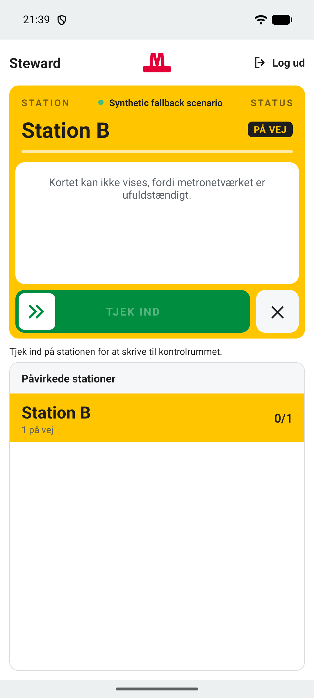
Status card
On the way
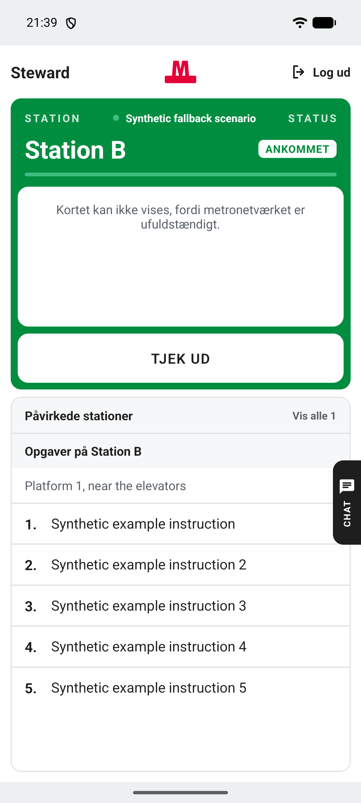
Station tasks
Chat tab
Station tasks
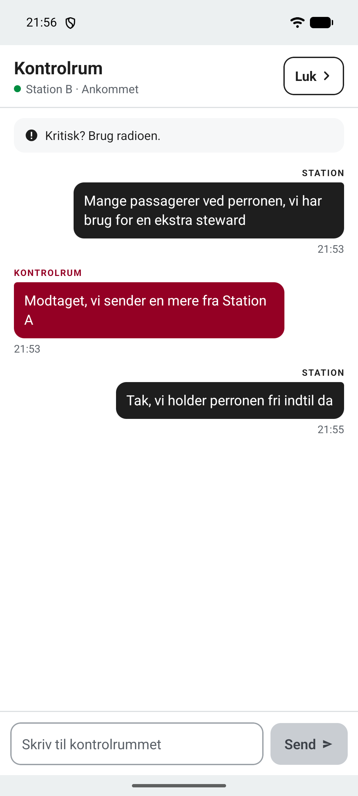
Station chat
Live demo
Karsten tries the operator and the steward app
This sprint
PBI 006
Done
Offline reports
PBI 018
In progress
Notifications
PBI 019
In progress
Scenario suggestions
PBI 027
Done
Usability test plan
PBI 029
In progress
Station chat · replaces 016 and 017
PBI 030
In progress
Admin dashboard
PBI 006 · Offline reports
No lost reports and no duplicates
Done
Mock-up
Connected
Offline and saved
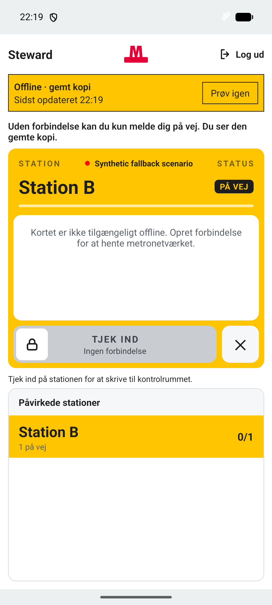
Back online and sent once
✓
01 · Offline
The phone saves the report.
02 · Back online
The phone sends the saved report automatically.
03 · Exactly once
The control room never sees the same report twice.
PBI 006 · Acceptance criteria
Acceptance criteria (issue #6)
Done
✓
Position and status reports made with no connection are queued locally and survive an application restart.
✓
On reconnection the client reconciles to the current server scenario within 5 seconds without user action.
✓
Each queued report is applied server-side exactly once, verified by a test that replays the same queue twice.
✓
If the scenario changed while the client was offline, queued reports against the superseded scenario are rejected and the steward is told why.
✓
Conflict resolution rules are recorded in an architecture decision record.
PBI 018 · Notifications
The phone tells you, even when it's in your pocket
In progress
The ADR is done (#412). The scenario start and end notification is coded but not yet tested on a phone (#413). The chat notification is not started (#414).
Mock-up
Scenarie aktiveret
Ny besked på Nørreport
01 · Scenario starts
The steward gets a notification.
02 · Scenario ends
The steward gets a notification.
03 · New message
Stewards who have checked in at the station get a notification.
PBI 018 · Acceptance criteria
Acceptance criteria (issue #18)
In progress
✓
The delivery channel is chosen, and the alternatives and the reason for the choice are recorded in an architecture decision record.
○
The steward receives a visible notification when a scenario starts and when it ends, also when the application is in the background.
○
The steward receives a visible notification when a message is sent to the chat of the station they are checked in at (MET-A-029).
○
Behavior when the device has no connection at send time is specified and tested.
○
Any dependency on a third-party service is named, together with what happens when it is unavailable.
PBI 018 · Questions for Karsten
01Would notifications on the steward's phone be useful when a scenario starts, ends, or when a new message arrives for their station? Are there other situations where a notification would help more?
PBI 019 · Scenario suggestions
Describe the incident. Get a suggestion.
In progress
01 · Describe
The operator writes where: stations and track, for example "Forum - Kongens Nytorvspor 1", in the "Beskriv hændelse" tab next to "Vælg fra liste".
02 · Match
The system finds the stations and the track in the text and ranks the operator's own scenarios. It suggests up to 5, or says "Ingen sikre forslag" and shows the full list.
03 · Confirm
A suggestion only selects the scenario. Starting it still takes START and the confirmation.
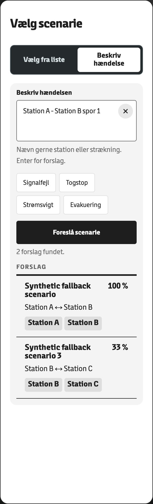
Suggestions
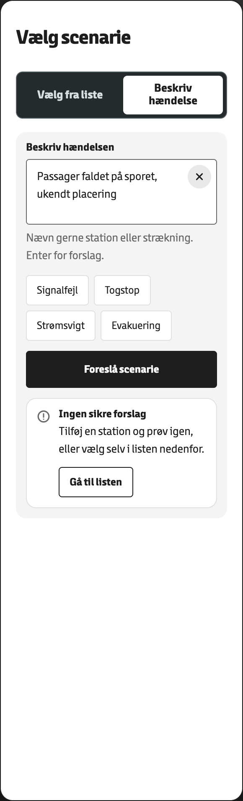
Ingen sikre forslag
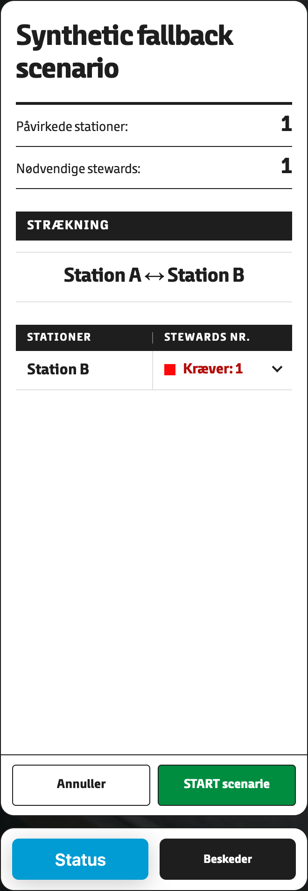
Preview
PBI 019 · Acceptance criteria
Acceptance criteria (issue #19)
In progress
✓
A deterministic method maps a free-text description to a ranked shortlist of at most five candidate scenarios.
✓
The method is exposed behind an interface that permits a second implementation to be swapped in without changing callers.
✓
A suggested scenario is never activated without the explicit confirmation required by A-007.
✓
When no candidate exceeds the agreed confidence threshold, the operator is told so and offered the full list instead of a poor ranking.
✓
The approach, its assumptions and its known failure modes are documented
○
The method is compared with a station filter on a self-labelled set, reproducible from one command, and the result and its limitations are documented.
PBI 019 · What we learned
What we learned
It finds where, not what
In practice, the search only uses the stations and the track number. In "Signalfejl mellem Kongens Nytorv og Christianshavnspor 2", only the two stations and "spor 2" are used. "Signalfejl" is ignored, because the scenarios don't record what kind of problem they cover. The limit is the data, and possibly how scenarios are defined.
Known weaknesses. Station codes in lowercase and everyday names like "Hovedbanegården" aren't recognised, and vague text like "Spor 1" can score high.
PBI 019 · Questions for Karsten
01What is the difference between operators picking a scenario on M1/M2 and M3/M4?
02Do operators find a scenario by name or number, or from the incident? Would selecting an area on the map work better than typing a description?
PBI 029 replaces 016 and 017
One chat instead of instructions and acknowledgements
We create new features from your feedback and from what we discover. 029 comes from the sprint 4 review.
Replaced
016 · Send an instruction
Dropped
017 · Acknowledge the instruction
New this sprint
029 · Station chat
01 · From the last review
Messages that are not urgent should not go over the radio.
02 · The chat belongs to the station
The operator writes to "Nørreport", not to a single person.
03 · Nothing left to acknowledge
017 depended on 016, so we dropped it.
PBI 029 · Question for Karsten
01We assume that stations and operators need to write to each other in both directions. Is that assumption right?
PBI 029 · Station chat
Messages that are not urgent, without the radio
In progress
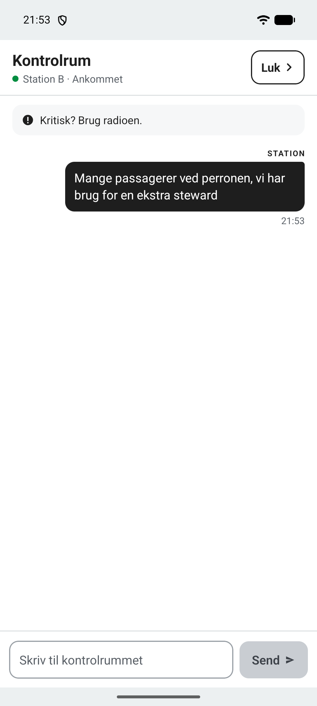
Checked in
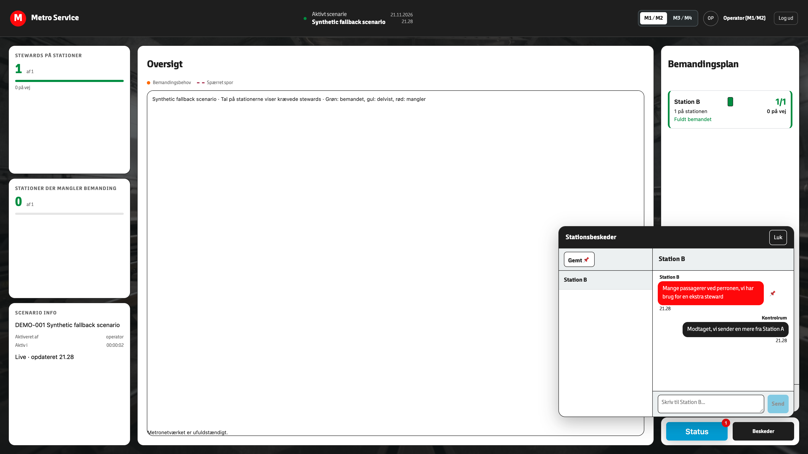
Stationsbeskeder
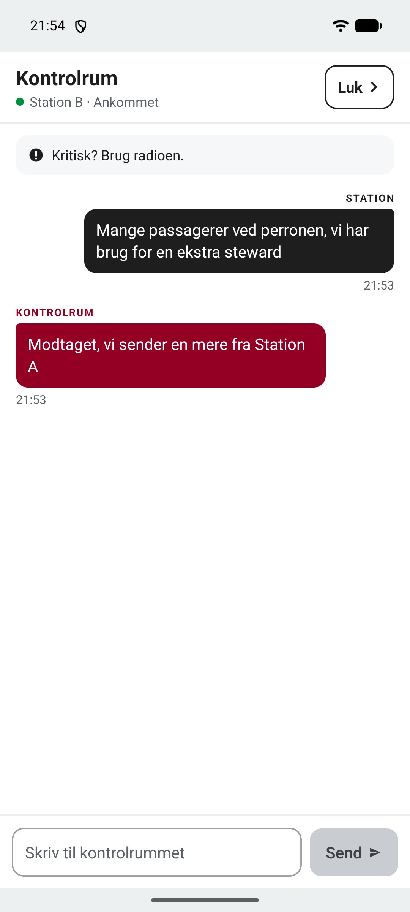
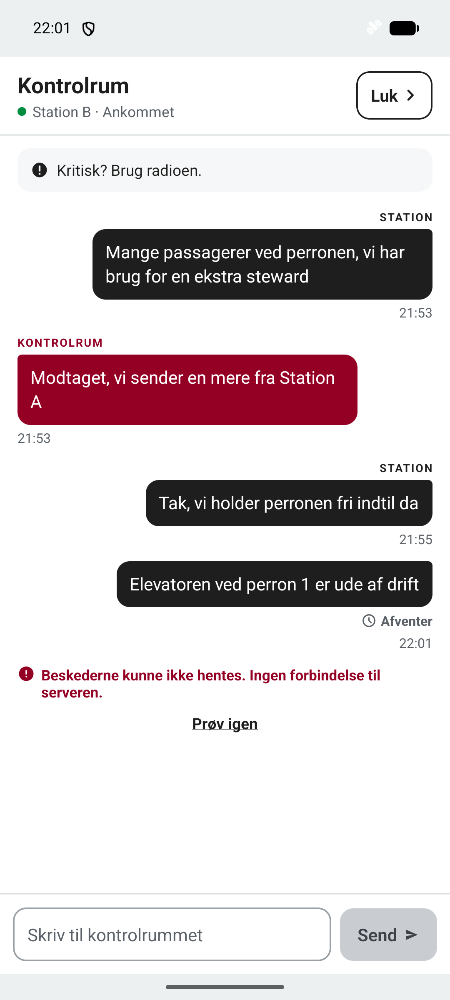
Afventer while offline
01 · Check in
Only a steward who has checked in at the station can open its chat.
02 · Write
The message is shown as coming from the station, not from the steward.
03 · Answer
The operator answers, and every steward at the station sees the answer.
PBI 029 · Acceptance criteria
Acceptance criteria (issue #331)
In progress
✓
Access: A steward checked in (ARRIVED) at a station can open the station's thread from the main screen in one tap. A steward who is not checked in cannot read or send, and the server rejects the attempt with a message the client can display.
✓
Messages: A message is free text, is shown as coming from the station, and shows the time it was written. The steward's identity is not shown to the operator.
○
Operator: An operator can write to any station's thread during an active scenario, as a reply or as the first message. It reaches the stewards checked in at that station within the timings in A-004, with a visible in-app notification, and messages only reach operators in the station's line group (#315).
✓
Pinning: An operator can pin a station message and unpin it again. Pinned messages are collected in one saved view. A pin belongs to the operator who made it and lasts until their browser session ends.
○
Lifetime: The thread stays at the station while the scenario is live, so a steward who checks in later sees the earlier messages. At stand-down it is closed and removed from both clients.
✓
Offline: A message written without connection is queued, sent once on reconnection (A-006) and shown as pending, and it keeps its original time written.
✓
Incident log: Every message writes an event to the incident log (A-023) with the station as the source, the text and both timestamps (written and received by the server), and without the steward's identity.
First introduce the testers to the plan for the day and what they can expect. After this we would like to separate each person and ask preliminary questions.
02 · Observe
Individual tasks
Operator and stewards complete realistic tasks while thinking aloud. This allows them to look at and try the system before a possible field test.
03 · Discuss
Feedback & improvements
Semistructured individual interviews. Compare with current practices and identify what should change. How did they like the system?
02.1 · Field test?
Go out in the metro and try the system. Needs more clarification.
We are testing the application, not the participants
PBI 027 · Proposed test structure
Four parts, within a two-hour session
15 to 20 min40 to 50 min60 to 80 min75 to 100 min
01
Introduction & existing workflows
15 to 20 min
Short interview on procedures and pain points. Introduce think-aloud and ask for recording consent.
02
Individual task-based testing
25 to 30 min
Participants work separately: scenario activation, assignment, arrival, station status and messages.
03
Field test or office simulation
20 to 30 min?
Observe use while moving between locations, if travel time permits. Decision needed from Metro.
04
Semistructured feedback
15 to 20 min
Open questions on usability, missing information and differences from current routines.
Staffing: ideally 2 students per steward, a facilitator and a note-taker or technical support. One or more operator observers.
PBI 027 · For discussion with Metro
Does this work in practice?
Main decision
Field test or simulate indoors?
With only two hours available, would walking from the Metro Service building to a station leave enough time to test and interview participants? How far apart are the planned test locations?
Would a simulation in the office be more realistic to organise?
Practical confirmations
What do we need?
1 operator and ideally 3 stewards
Separate participants for individual tasks
Android phones and operator access
Permission for audio recording, with the participants' consent
Metro tickets or other access for the students who accompany stewards
Any operational, security or confidentiality restrictions: what should we not ask participants to do, observe, record or discuss?
Our main request: Is the structure realistic, and which workflows or situations would you like us to include?
Up next · Started & in progress
Useful additions beyond the core steward workflow
PBI 030 · Admin dashboard
Managing users and scenarios
An administration view is being implemented to let authorised administrators manage user accounts and roles, create or edit scenarios, and review relevant activity.
This is additional functionality we consider valuable for maintaining and operating the system, even though it is not central to the usability test.
Next steps
Implementation & evaluation
Continue the admin work
Finalise the test setup
Run usability evaluation
Turn findings into prioritised issues
Status: PBI 030 is in progress, not presented as completed functionality.
PBI 030 · Questions for Karsten
Accounts and access
01 · Login
Stewards may sign in through their work phone rather than in each app. How important is it that our app supports the same login? Should we consider that integration for future development?
02 · Lines
Should operators and stewards only see information for their own Metro lines, or are there situations where they need to see several lines?
Sprint 5 · Definition of Done
01
Merged and run on the dev branch.
02
Whenever an acceptance criterion in an issue is fulfilled, check it off on the PBI and point to how and where it was solved.
03
New features, fixes and bugs are linked to issues. Documentation and chores do not need to be.
04
The PR passes all required CI checks, including test coverage.
05
Any decision a future reader would find surprising is recorded as an architecture decision record (ADR).
06
Documentation that the changes make wrong is corrected in the same pull request.
07
The PR is approved by at least 1 external reviewer and merged by the PR owner.
08
Every requested change is either fixed or answered with a reason it won't be. Those are listed under "Noticed, not fixed" in the PR, with a linked issue.